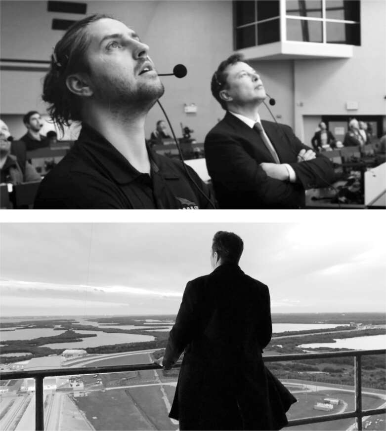

Người thường lên quỹ đạo
Kể từ khi chương trình tàu con thoi ngừng hoạt động vào năm 2011, Hoa Kỳ đã trải qua một khoảng thời gian đáng kinh ngạc về sự thiếu hụt khả năng, ý chí và tầm nhìn trong lĩnh vực không gian, đối với một quốc gia đã từng thực hiện chín chuyến bay lên mặt trăng chỉ hai thế hệ trước đó. Trong gần một thập kỷ sau chuyến bay cuối cùng của tàu con thoi, Mỹ đã không thể đưa người vào vũ trụ. Họ buộc phải dựa vào tên lửa của Nga để đưa các phi hành gia lên Trạm Vũ trụ Quốc tế. Năm 2020, SpaceX đã thay đổi điều đó.
Vào tháng 5 năm đó, một tên lửa Falcon 9 mang theo tàu vũ trụ Crew Dragon đã sẵn sàng đưa hai phi hành gia NASA lên Trạm Vũ trụ Quốc tế - lần đầu tiên một công ty tư nhân đưa người lên quỹ đạo. Tổng thống Trump và Phó Tổng thống Pence đã bay tới Cape Canaveral và ngồi trên khán đài gần bệ phóng 39A để theo dõi vụ phóng. Musk, đeo tai nghe và ngồi cạnh con trai Kai, có mặt trong phòng điều khiển. Hàng chục triệu người đã theo dõi trực tiếp trên truyền hình và các nền tảng trực tuyến. "Tôi không phải là người sùng đạo", Musk sau đó chia sẻ với người dẫn chương trình Lex Fridman, "nhưng tôi đã quỳ xuống và cầu nguyện cho sứ mệnh này".
Khi tên lửa cất cánh, phòng điều khiển vỡ òa trong tiếng hò reo. Trump và các chính trị gia khác đã đến chúc mừng. "Đây là thông điệp không gian lớn đầu tiên trong năm mươi năm, hãy nghĩ về điều đó", Trump nói. "Và thật vinh dự khi được chứng kiến điều này." Musk không hiểu rõ tổng thống đang nói gì và giữ khoảng cách. Khi Trump tiến đến gần Musk và nhóm của anh, hỏi: "Các anh đã sẵn sàng cho bốn năm nữa chưa?", Musk lơ đãng và quay đi.
Khi NASA trao cho SpaceX hợp đồng chế tạo tên lửa đưa phi hành gia lên Trạm Vũ trụ, cùng ngày năm 2014, họ cũng trao một hợp đồng tương tự cho Boeing, với mức kinh phí cao hơn 40%. Vào thời điểm SpaceX thành công năm 2020, Boeing thậm chí còn chưa thể thực hiện một chuyến bay thử nghiệm không người lái để kết nối với trạm.
Để ăn mừng thành công của SpaceX, Musk đã cùng Kimbal, Grimes, Luke Nosek và một vài người khác đến một khu nghỉ dưỡng ở Everglades, cách Cape Canaveral hai giờ lái xe về phía nam. Nosek nhớ lại rằng "tầm vóc lịch sử" của khoảnh khắc đó bắt đầu tác động đến họ. Họ nhảy múa suốt đêm, Kimbal nhảy lên và hét lên: "Em trai tôi vừa đưa các phi hành gia lên vũ trụ!"
Sau khi SpaceX đưa các phi hành gia lên Trạm Vũ trụ vào tháng 5 năm 2020, họ đã có một chuỗi ấn tượng với mười một lần phóng vệ tinh không người lái thành công trong năm tháng. Nhưng Musk, như mọi khi, lo sợ sự tự hài lòng. Anh lo lắng rằng nếu không duy trì tinh thần khẩn trương cao độ, SpaceX có thể trở nên ì chệ và chậm chạp, giống như Boeing.
Sau một trong những lần phóng vào tháng 10 năm đó, Musk đã đến thăm bệ phóng 39A vào đêm khuya. Chỉ có hai người đang làm việc. Những cảnh tượng như vậy khiến anh bực tức. Ở tất cả các công ty của mình, như các nhân viên tại Twitter sẽ được chứng kiến, anh ấy mong đợi mọi người làm việc với cường độ không ngừng nghỉ. "Chúng ta có 783 nhân viên làm việc tại Cape," anh nói với phó giám đốc phụ trách phóng tên lửa trong cơn giận dữ. "Tại sao bây giờ chỉ có hai người trong số họ làm việc?" Musk cho anh ta 48 giờ để chuẩn bị một báo cáo về những việc mà mọi người được giao.
Vì không nhận được câu trả lời mong muốn, Musk quyết định tự mình tìm hiểu. Ông dồn toàn lực, tập trung cao độ. Giống như những gì đã làm tại nhà máy Tesla ở Nevada và Fremont, và sau này là tại Twitter, ông chuyển đến sống ngay tại tòa nhà, trong trường hợp này là nhà chứa máy bay ở Cape Canaveral, và làm việc suốt ngày đêm. Sự hiện diện thâu đêm của ông vừa mang tính chất thể hiện, vừa là thực tế. Vào đêm thứ hai, ông không thể liên lạc được với Phó chủ tịch phụ trách phóng, người đã có vợ con và theo suy nghĩ của Musk, đã "mất tích", nên ông yêu cầu được nói chuyện với một trong những kỹ sư đã làm việc cùng mình tại nhà chứa máy bay, Kiko Dontchev.
Dontchev sinh ra ở Bulgaria và di cư sang Mỹ khi còn nhỏ, khi cha ông, một nhà toán học, nhận công việc tại Đại học Michigan. Anh lấy bằng đại học và sau đại học về kỹ thuật hàng không vũ trụ, điều mà anh nghĩ là cơ hội mơ ước của mình: thực tập tại Boeing. Nhưng anh nhanh chóng vỡ mộng và quyết định đến thăm một người bạn đang làm việc tại SpaceX. "Tôi sẽ không bao giờ quên ngày hôm đó khi bước vào nhà máy," anh nói. "Tất cả các kỹ sư trẻ đều làm việc chăm chỉ, mặc áo phông, xăm mình và rất quyết liệt để hoàn thành công việc. Tôi đã nghĩ, 'Đây là những người của tôi.' Nó hoàn toàn khác với bầu không khí gò bó, cứng nhắc tại Boeing."
Mùa hè năm đó, anh đã thuyết trình với một Phó chủ tịch tại Boeing về cách SpaceX tạo điều kiện cho các kỹ sư trẻ đổi mới. "Nếu Boeing không thay đổi," anh nói, "các ông sẽ mất đi những nhân tài hàng đầu." Vị Phó chủ tịch trả lời rằng Boeing không tìm kiếm những người phá vỡ. "Có lẽ chúng tôi muốn những người không phải là giỏi nhất, nhưng sẽ gắn bó lâu hơn." Dontchev đã nghỉ việc.
Tại một hội nghị ở Utah, anh đã đến một bữa tiệc do SpaceX tổ chức và sau vài ly rượu, anh lấy hết can đảm để tiếp cận Gwynne Shotwell. Anh rút một bản sơ yếu lý lịch nhàu nát ra khỏi túi và cho cô xem ảnh phần cứng vệ tinh mà anh đã thực hiện. "Tôi có thể làm cho mọi việc xảy ra," anh nói với cô.
Shotwell tỏ ra thích thú. "Bất cứ ai đủ can đảm để đến gặp tôi với một bản sơ yếu lý lịch nhàu nát đều có thể là một ứng viên tốt," cô nói. Cô mời anh đến SpaceX để phỏng vấn. Anh được sắp xếp gặp Musk, người vẫn phỏng vấn mọi kỹ sư được tuyển dụng, lúc 3 giờ chiều. Như thường lệ, Musk bị trì hoãn, và Dontchev được thông báo rằng anh sẽ phải quay lại vào một ngày khác. Thay vào đó, Dontchev ngồi bên ngoài phòng làm việc của Musk trong năm giờ. Khi cuối cùng cũng được gặp Musk lúc 8 giờ tối, Dontchev đã tận dụng cơ hội để nói về cách tiếp cận nhiệt huyết của mình không được coi trọng tại Boeing.
Khi tuyển dụng hoặc thăng chức, Musk luôn ưu tiên thái độ hơn kỹ năng ghi trên sơ yếu lý lịch. Và định nghĩa của ông về một thái độ tốt là mong muốn làm việc chăm chỉ đến mức cuồng nhiệt. Musk đã tuyển dụng Dontchev ngay tại chỗ.
Vào đêm tháng 10 đó, trong khoảng thời gian làm việc cật lực tại Cape, khi Musk yêu cầu được nói chuyện với Dontchev, người kỹ sư này vừa về nhà sau ba ngày làm việc liên tục và mở một chai rượu vang. Ban đầu, anh phớt lờ số điện thoại lạ trên điện thoại của mình, nhưng sau đó một trong những đồng nghiệp của anh đã gọi cho vợ anh. Bảo Kiko quay lại nhà chứa máy bay ngay lập tức. Musk muốn gặp anh ta. "Tôi rất mệt, nửa say, mấy ngày rồi chưa ngủ, vì vậy tôi lên xe, mua một gói thuốc lá để tỉnh táo và quay lại nhà chứa máy bay," anh nói. "Tôi lo lắng về việc bị cảnh sát giao thông bắt vì lái xe khi say rượu, nhưng điều đó dường như ít nguy hiểm hơn là phớt lờ Elon."
Khi Dontchev đến nơi, Musk yêu cầu anh tổ chức một loạt cuộc họp "bỏ cấp" để trao đổi với các kỹ sư ở cấp dưới quản lý cấp cao. Từ đó, một cuộc cải tổ đã diễn ra. Dontchev được thăng chức lên kỹ sư trưởng tại Cape, và người cố vấn của anh, Rich Morris, một quản lý kỳ cựu điềm tĩnh, được giao phụ trách hoạt động. Dontchev sau đó đã đưa ra một yêu cầu thông minh. Anh nói rằng anh muốn báo cáo cho Morris thay vì trực tiếp cho Musk. Kết quả là một đội ngũ vận hành trơn tru do một người quản lý biết cách làm người dẫn dắt như Yoda và một kỹ sư luôn sẵn sàng đáp ứng cường độ làm việc của Musk.
Việc Musk thúc đẩy tiến độ nhanh hơn, chấp nhận nhiều rủi ro hơn, phá vỡ các quy tắc và đặt câu hỏi về các yêu cầu đã cho phép ông đạt được những thành tựu lớn, chẳng hạn như đưa con người vào quỹ đạo, tiếp thị xe điện đại trà và giúp các hộ gia đình thoát khỏi lưới điện. Điều đó cũng đồng nghĩa với việc ông đã làm những việc – phớt lờ các yêu cầu của SEC, bất chấp các hạn chế COVID của California – khiến ông gặp rắc rối.
Hans Koenigsmann là một trong những kỹ sư SpaceX đầu tiên được Musk tuyển dụng vào năm 2002. Ông đã là một phần của đội ngũ dũng cảm trên Kwaj trong ba lần phóng thất bại đầu tiên và sau đó là lần phóng thành công thứ tư của Falcon 1. Musk đã thăng chức ông lên phó chủ tịch phụ trách độ tin cậy bay, đảm bảo các chuyến bay an toàn và tuân thủ quy định. Đó không phải là một công việc dễ dàng dưới thời Musk.
Cuối năm 2020, SpaceX đang chuẩn bị phóng thử nghiệm tên lửa đẩy Super Heavy không người lái. Tất cả các chuyến bay phải tuân thủ các yêu cầu do Cục Hàng không Liên bang (FAA) đặt ra, bao gồm cả hướng dẫn về thời tiết. Sáng hôm đó, thanh tra FAA giám sát việc phóng từ xa đã quyết định rằng gió trên cao khiến việc phóng không an toàn. Nếu có một vụ nổ khi phóng, các ngôi nhà gần đó có thể bị ảnh hưởng. SpaceX đã trình bày mô hình thời tiết riêng của mình cho thấy điều kiện an toàn và yêu cầu miễn trừ, nhưng FAA đã từ chối.
Không có ai từ FAA thực sự có mặt trong phòng điều khiển, và các quy tắc hơi (mặc dù không quá) mơ hồ, vì vậy giám đốc phóng đã quay sang Elon và lặng lẽ nghiêng đầu như thể hỏi liệu anh ta có nên tiếp tục hay không. Musk gật đầu im lặng. Tên lửa cất cánh. "Tất cả đều rất tinh tế," Koenigsmann nói. "Đó là Elon điển hình. Một quyết định chấp nhận rủi ro được báo hiệu bằng một cái gật đầu."
Tên lửa được phóng hoàn hảo, không gặp vấn đề gì về thời tiết, mặc dù nó đã thất bại khi cố gắng hạ cánh thẳng đứng cách đó sáu dặm. FAA đã mở một cuộc điều tra về lý do tại sao quyết định về thời tiết của họ bị phớt lờ, và họ đã tạm dừng các thử nghiệm của SpaceX trong hai tháng, nhưng cuối cùng họ không áp đặt bất kỳ hình phạt đáng kể nào.
Là một phần công việc của mình, Koenigsmann đã viết một báo cáo về vụ việc, và ông không che đậy hành vi của SpaceX. "FAA vừa thiếu năng lực vừa bảo thủ, đó là một sự kết hợp tồi tệ, nhưng tôi vẫn cần sự chấp thuận của họ trước khi chúng tôi bay, và chúng tôi đã không có điều đó," ông nói với tôi. "Elon đã phóng khi FAA nói rằng chúng tôi không thể. Vì vậy, tôi đã viết một báo cáo trung thực nói điều đó." Ông muốn SpaceX, và Musk, nhận trách nhiệm.
Đó không phải là thái độ mà Musk coi trọng. "Anh ấy không nhìn nhận sự việc theo cách đó, và trở nên nhạy cảm, rất nhạy cảm," Koenigsmann nói.
Koenigsmann đã ở SpaceX từ những ngày đầu rất khó khăn, và Musk không muốn sa thải ông ngay lập tức. Nhưng ông đã tước bỏ nhiệm vụ giám sát của ông và cho ông nghỉ việc trong vài tháng. "Anh đã làm một công việc tuyệt vời trong nhiều năm, nhưng cuối cùng thời gian của mọi người cũng đến lúc nghỉ hưu," Musk nói với ông trong một email. "Bây giờ là của anh."

Với Kiko Dontchev, và tại tháp phóng Cape Canaveral